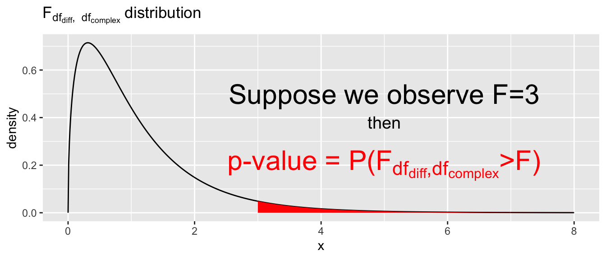

Chapter 3 Inference
library(tidymodels) # Grab model results as data frames
library(tidyverse) # ggplot2, dplyr, tidyrLearning Outcomes
- Utilize \(\hat{\boldsymbol{\beta}}\) and its standard errors of to produce confidence intervals and hypothesis tests for \(\beta_j\) values.
- Convert hypothesis tests for \(\beta_j=0\) into a model comparison F-test.
- Utilize F-tests to perform a hypothesis test of multiple \(\beta_j\) values all being equal to zero. This is the simple vs complex model comparison.
- Create confidence intervals for \(\beta_j\) values leveraging the normality assumption of residuals.
3.1 Introduction
The goal of statistics is to take information calculated from sample data and use that information to estimate population parameters. The problem is that the sample statistic is only a rough guess and if we were to collect another sample of data, we’d get a different sample statistic and thus a different parameter estimate. Therefore, we need to utilize the sample statistics to create confidence intervals and make hypothesis tests about those parameters.
- Introduce the inference ideas about why we care.
- Introduce the Gala data set.
In this chapter, we’ll consider a dataset about the Galápagos Islands relating the number of tortoise species on an island to various island characteristics such as size, maximum elevation, etc. The set contains \(n=30\) islands and
| Variable | Description |
|---|---|
Species |
Number of tortoise species found on the island |
Endimics |
Number of tortoise species endemic to the island |
Elevation |
Elevation of the highest point on the island |
Area |
Area of the island (km\(^2\)) |
Nearest |
Distance to the nearest neighboring island (km) |
Scruz |
Distance to the Santa Cruz islands (km) |
Adjacent |
Area of the nearest adjacent island (km\(^2\)) |
data('gala', package='faraway') # import the data set
head(gala) # show the first couple of rows## Species Endemics Area Elevation Nearest Scruz Adjacent
## Baltra 58 23 25.09 346 0.6 0.6 1.84
## Bartolome 31 21 1.24 109 0.6 26.3 572.33
## Caldwell 3 3 0.21 114 2.8 58.7 0.78
## Champion 25 9 0.10 46 1.9 47.4 0.18
## Coamano 2 1 0.05 77 1.9 1.9 903.82
## Daphne.Major 18 11 0.34 119 8.0 8.0 1.843.2 Confidence Intervals and Hypothesis Tests
We can now state the general method of creating confidence intervals and perform hypothesis tests for any element of \(\boldsymbol{\beta}\).
The general recipe for a \((1-\alpha)*100\%\) confidence interval is \[\textrm{Estimate} \pm Q^*_{1-\alpha/2} \;\textrm{StdErr( Estimate )}\] where \(Q^*_{1-\alpha/2}\) is the \(1-\alpha/2\) quantile from some appropriate distribution. The mathematical details about which distribution the quantile should come from are often obscure, but usually involve the degrees of freedom \(n-p\) where \(p\) is the number of parameters in the “signal” part of the model.
The confidence interval formula for the \(\beta\) parameters in a linear model is \[\hat{\beta}_{j}\pm t^*_{1-\alpha/2, n-p}\,StdErr\left(\hat{\beta}_{j}\right)\]
where \(t^*_{1-\alpha/2, n-p}\) is the \(1-\alpha/2\) quantile from the t-distribution with \(n-p\) degrees of freedom. A test statistic for testing \(H_{0}:\,\beta_{j}=0\) versus \(H_{a}:\,\beta_{j}\ne0\) is
\[t_{n-p}=\frac{\hat{\beta}_{j}-0}{StdErr\left(\hat{\beta}_{j}\right)}\]
3.3 F-tests
We wish to develop a rigorous way to compare nested models and decide if a complicated model explains enough more variability than a simple model to justify the additional intellectual effort of thinking about the data in the complicated fashion.
It is important to specify that we are developing a way of testing nested models. By nested, we mean that the simple model can be created from the full model just by setting one or more model parameters to zero. This method doesn’t constrain us for testing just a single parameter being possibly zero. Instead we can test if an entire set of parameters all possibly being equal to zero.
3.3.1 Theory
Recall that in the simple regression and ANOVA cases we were interested in comparing a simple model versus a more complex model. For each model we computed the sum of squares error (SSE) and said that if the complicated model performed much better than the simple then \(SSE_{simple}\gg SSE_{complex}\).
Recall from the estimation chapter, the model parameter estimates are found by using the \(\hat{\boldsymbol{\beta}}\) values that minimize the SSE. If it were to turn out that a \(\hat{\beta}_j\) of zero minimized SSE, then zero would be estimate. Next consider that we are requiring the simple model to be a simplification of the complex model by setting certain parameters to zero. So we are considering a simple model that sets \(\hat{\beta}_j=0\) and vs a complex model that allows for \(\hat{\beta}_j\) to be any real value (including), then because we select \(\hat{\beta}_j\) to be the value that minimizes SSE, then \(SSE_{simple} \ge SSE_{complex}\).
We’ll define \(SSE_{difference} = SSE_{simple} - SSE{complex} \ge 0\) and observe that if the complex model is a much better fit to the data, then \(SSE_{difference}\) is large. But how large is large enough to be statistically significant? In part, it depends on how many more parameters were added to the model and what the amount of unexplained variability left in the complex model. Let \(df_{diff}\) be the number of parameters difference between the simple and complex models.
As with most test statistics, the F statistic can be considered as a “Signal-to-Noise” ratio where the signal part is the increased amount of variability explained per additional parameter by the complex model and the noise part is just the MSE of the complex model.
\[F = \frac{\textrm{Signal}}{\textrm{Noise}} = \frac{RSS_{difference}/df_{diff}}{RSS_{complex}/df_{complex}}\]
and we claimed that if the null hypothesis was true (i.e. the complex model is an unnecessary obfuscation of the simple), then this ratio follows an F-distribution with degrees of freedom \(df_{diff}\) and \(df_{complex}\).
The F-distribution is centered near one and we should reject the simple model (in favor of the complex model) if this F statistic is much larger than one. Therefore the p-value for the test is

This hypothesis test doesn’t require a particular difference in number of parameters in each model, while the single parameter t-test is stuck testing if just a single parameter is possibly zero. In the single parameter test case, the t-test and F-test give the same prior hypothesis test previous t-test. The a corresponding t-test and F-test will give the same p-value and therefore the same inference about if \(\beta_j\) is possibly zero.
3.4 Example
We will consider a data set from Johnson and Raven (1973) which also appears in Weisberg (1985). This data set is concerned with the number of tortoise species on \(n=30\) different islands in the Galapagos. The variables of interest in the data set are:
| Variable | Description |
|---|---|
Species |
Number of tortoise species found on the island |
Endimics |
Number of tortoise species endemic to the island |
Elevation |
Elevation of the highest point on the island |
Area |
Area of the island (km\(^2\)) |
Nearest |
Distance to the nearest neighboring island (km) |
Scruz |
Distance to the Santa Cruz islands (km) |
Adjacent |
Area of the nearest adjacent island (km\(^2\)) |
We will first read in the data set from the package faraway.
data('gala', package='faraway') # import the data set
head(gala) # show the first couple of rows## Species Endemics Area Elevation Nearest Scruz Adjacent
## Baltra 58 23 25.09 346 0.6 0.6 1.84
## Bartolome 31 21 1.24 109 0.6 26.3 572.33
## Caldwell 3 3 0.21 114 2.8 58.7 0.78
## Champion 25 9 0.10 46 1.9 47.4 0.18
## Coamano 2 1 0.05 77 1.9 1.9 903.82
## Daphne.Major 18 11 0.34 119 8.0 8.0 1.84First we will create the full model that predicts the number of species as a function of elevation, area, nearest, scruz and adjacent. Notice that this model has \(p=6\) \(\beta_{i}\) values (one for each coefficient plus the intercept).
\[ y_i = \beta_0 + \beta_1 Area_i + \beta_2 Elevation_i + \beta_3 Nearest_i + \beta_4 Scruz_i + \beta_5 Adjacent_i + \epsilon_i\]
We can happily fit this model just by adding terms on the left hand side of the model formula. Notice that R creates the design matrix \(X\) for us.
M.c <- lm(Species ~ Area + Elevation + Nearest + Scruz + Adjacent, data=gala)
model.matrix(M.c) # this is the design matrix X.## (Intercept) Area Elevation Nearest Scruz Adjacent
## Baltra 1 25.09 346 0.6 0.6 1.84
## Bartolome 1 1.24 109 0.6 26.3 572.33
## Caldwell 1 0.21 114 2.8 58.7 0.78
## Champion 1 0.10 46 1.9 47.4 0.18
## Coamano 1 0.05 77 1.9 1.9 903.82
## Daphne.Major 1 0.34 119 8.0 8.0 1.84
## Daphne.Minor 1 0.08 93 6.0 12.0 0.34
## Darwin 1 2.33 168 34.1 290.2 2.85
## Eden 1 0.03 71 0.4 0.4 17.95
## Enderby 1 0.18 112 2.6 50.2 0.10
## Espanola 1 58.27 198 1.1 88.3 0.57
## Fernandina 1 634.49 1494 4.3 95.3 4669.32
## Gardner1 1 0.57 49 1.1 93.1 58.27
## Gardner2 1 0.78 227 4.6 62.2 0.21
## Genovesa 1 17.35 76 47.4 92.2 129.49
## Isabela 1 4669.32 1707 0.7 28.1 634.49
## Marchena 1 129.49 343 29.1 85.9 59.56
## Onslow 1 0.01 25 3.3 45.9 0.10
## Pinta 1 59.56 777 29.1 119.6 129.49
## Pinzon 1 17.95 458 10.7 10.7 0.03
## Las.Plazas 1 0.23 94 0.5 0.6 25.09
## Rabida 1 4.89 367 4.4 24.4 572.33
## SanCristobal 1 551.62 716 45.2 66.6 0.57
## SanSalvador 1 572.33 906 0.2 19.8 4.89
## SantaCruz 1 903.82 864 0.6 0.0 0.52
## SantaFe 1 24.08 259 16.5 16.5 0.52
## SantaMaria 1 170.92 640 2.6 49.2 0.10
## Seymour 1 1.84 147 0.6 9.6 25.09
## Tortuga 1 1.24 186 6.8 50.9 17.95
## Wolf 1 2.85 253 34.1 254.7 2.33
## attr(,"assign")
## [1] 0 1 2 3 4 5All the usual calculations from chapter two can be calculated and we can see the summary table for this regression as follows:
summary(M.c)##
## Call:
## lm(formula = Species ~ Area + Elevation + Nearest + Scruz + Adjacent,
## data = gala)
##
## Residuals:
## Min 1Q Median 3Q Max
## -111.679 -34.898 -7.862 33.460 182.584
##
## Coefficients:
## Estimate Std. Error t value Pr(>|t|)
## (Intercept) 7.068221 19.154198 0.369 0.715351
## Area -0.023938 0.022422 -1.068 0.296318
## Elevation 0.319465 0.053663 5.953 3.82e-06 ***
## Nearest 0.009144 1.054136 0.009 0.993151
## Scruz -0.240524 0.215402 -1.117 0.275208
## Adjacent -0.074805 0.017700 -4.226 0.000297 ***
## ---
## Signif. codes: 0 '***' 0.001 '**' 0.01 '*' 0.05 '.' 0.1 ' ' 1
##
## Residual standard error: 60.98 on 24 degrees of freedom
## Multiple R-squared: 0.7658, Adjusted R-squared: 0.7171
## F-statistic: 15.7 on 5 and 24 DF, p-value: 6.838e-073.4.1 Testing All Covariates
The first test we might want to do is to test if any of the covariates are significant. That is to say that we want to test the full model versus the simple null hypothesis model \[y_{i}=\beta_{0}+\epsilon_{i}\] that has no covariates and only a y-intercept. So we will create a simple model
M.s <- lm(Species ~ 1, data=gala)and calculate the appropriate Residual Sums of Squares (RSS) for each model, along with the difference in degrees of freedom between the two models.
RSS.c <- sum(resid(M.c)^2)
RSS.s <- sum(resid(M.s)^2)
df.diff <- 5 # complex model has 5 additional parameters
df.c <- 30 - 6 # complex model has 24 degrees of freedom leftThe F-statistic for this test is therefore
F.stat <- ( (RSS.s - RSS.c) / df.diff ) / ( RSS.c / df.c )
F.stat## [1] 15.69941and should be compared against the F-distribution with \(5\) and \(24\) degrees of freedom. Because a large difference between RSS.s and RSS.c would be evidence for the alternative, larger model, the p-value for this test is \[p-value=P\left(F_{5,24}\ge\mathtt{F.stat}\right)\]
p.value <- 1 - pf(15.699, 5, 24)
p.value## [1] 6.839486e-07Both the F.stat and its p-value are given at the bottom of the summary table. However, I might be interested in creating an ANOVA table for this situation.
| Source | df | Sum Sq | Mean Sq | F | p-value |
|---|---|---|---|---|---|
| Difference | \(p-1\) | \(RSS_d\) | \(MSE_d = RSS_d / (p-1)\) | \(MSE_d/MSE_c\) | \(P(F > F_{p-1,n-p})\) |
| Complex | \(n-p\) | \(RSS_c\) | \(MSE_c = RSS_c / (n-p)\) | ||
| Simple | \(n-1\) | \(RSS_s\) |
This type of table is often shown in textbooks, but base functions in R don’t produce exactly this table. Instead the anova(simple, complex) command produces the following:
| Models | df | RSS | Diff in RSS | F | p-value |
|---|---|---|---|---|---|
| Simple | \(n-1\) | \(RSS_s\) | |||
| Complex | \(n-p\) | \(RSS_c\) | \(RSS_d\) | \(MSE_d/MSE_c\) | \(P(F > F_{p-1,n-p})\) |
can be obtained from R by using the anova() function on the two models of interest. This representation skips showing the Mean Squared calculations.
anova(M.s, M.c)## Analysis of Variance Table
##
## Model 1: Species ~ 1
## Model 2: Species ~ Area + Elevation + Nearest + Scruz + Adjacent
## Res.Df RSS Df Sum of Sq F Pr(>F)
## 1 29 381081
## 2 24 89231 5 291850 15.699 6.838e-07 ***
## ---
## Signif. codes: 0 '***' 0.001 '**' 0.01 '*' 0.05 '.' 0.1 ' ' 13.4.2 Testing a Single Covariate
For a particular covariate, \(\beta_{j}\), we might wish to perform a test to see if it can be removed from the model. It can be shown that the F-statistic can be re-written as
\[\begin{aligned} F &= \frac{\left[RSS_{s}-RSS_{c}\right]/1}{RSS_{c}/\left(n-p\right)}\\ &= \vdots\\ &= \left[\frac{\hat{\beta_{j}}}{SE\left(\hat{\beta}_{j}\right)}\right]^{2}\\ &= t^{2} \end{aligned}\] where \(t\) has a t-distribution with \(n-p\) degrees of freedom under the null hypothesis that the simple model is sufficient.
We consider the case of removing the covariate Area from the model and will calculate our test statistic using both methods.
M.c <- lm(Species ~ Area + Elevation + Nearest + Scruz + Adjacent, data=gala)
M.s <- lm(Species ~ Elevation + Nearest + Scruz + Adjacent, data=gala)
RSS.c <- sum( resid(M.c)^2 )
RSS.s <- sum( resid(M.s)^2 )
df.d <- 1
df.c <- 30-6
F.stat <- ((RSS.s - RSS.c)/1) / (RSS.c / df.c)
F.stat## [1] 1.1397921 - pf(F.stat, 1, 24)## [1] 0.296318sqrt(F.stat)## [1] 1.067611To calculate it using the estimated coefficient and its standard error, we must grab those values from the summary table
broom::tidy(M.c) # get the coefficient table ## # A tibble: 6 x 5
## term estimate std.error statistic p.value
## <chr> <dbl> <dbl> <dbl> <dbl>
## 1 (Intercept) 7.07 19.2 0.369 0.715
## 2 Area -0.0239 0.0224 -1.07 0.296
## 3 Elevation 0.319 0.0537 5.95 0.00000382
## 4 Nearest 0.00914 1.05 0.00867 0.993
## 5 Scruz -0.241 0.215 -1.12 0.275
## 6 Adjacent -0.0748 0.0177 -4.23 0.000297beta.area <- broom::tidy(M.c)[2,2] %>% pull() # pull turns it into a scalar
SE.beta.area <- broom::tidy(M.c)[2,3] %>% pull()
t <- beta.area / SE.beta.area
t## [1] -1.0676112 * pt(t, 24)## [1] 0.296318All that hand calculation is tedious, so we can again use the anova()() command to compare the two models.
anova(M.s, M.c)## Analysis of Variance Table
##
## Model 1: Species ~ Elevation + Nearest + Scruz + Adjacent
## Model 2: Species ~ Area + Elevation + Nearest + Scruz + Adjacent
## Res.Df RSS Df Sum of Sq F Pr(>F)
## 1 25 93469
## 2 24 89231 1 4237.7 1.1398 0.29633.4.3 Testing a Subset of Covariates
Often a researcher will want to remove a subset of covariates from the model. In the Galapagos example, Area, Nearest, and Scruz all have non-significant p-values and would be removed when comparing the full model to the model without that one covariate. While each of them might be non-significant, is the sum of all three significant?
Because the individual \(\hat{\beta}_{j}\) values are not independent, then we cannot claim that the subset is not statistically significant just because each variable in turn was insignificant. Instead we again create simple and complex models in the same fashion as we have previously done.
M.c <- lm(Species ~ Area + Elevation + Nearest + Scruz + Adjacent, data=gala)
M.s <- lm(Species ~ Elevation + Adjacent, data=gala)
anova(M.s, M.c)## Analysis of Variance Table
##
## Model 1: Species ~ Elevation + Adjacent
## Model 2: Species ~ Area + Elevation + Nearest + Scruz + Adjacent
## Res.Df RSS Df Sum of Sq F Pr(>F)
## 1 27 100003
## 2 24 89231 3 10772 0.9657 0.425We find a large p-value associated with this test and can safely stay with the null hypothesis, that the simple model is sufficient to explain the observed variability in the number of species of tortoise.
3.5 Exercises
The dataset prostate in package
farawayhas information about a study of 97 men with prostate cancer. We import the data and examine the first four observations using the following commands.data(prostate, package='faraway') head(prostate)It is possible to get information about the data set using the command
help(prostate). Fit a model withlpsaas the response and all the other variables as predictors.Compute \(90\%\) and \(95\%\) confidence intervals for the parameter associated with
age. Using just these intervals, what could we deduced about the p-value for age in the regression summary. Hint: look at the help for the functionconfint(). You’ll find theleveloption to be helpful. Alternatively use thebroom::tidy()function with theconf.int=TRUEoption and also use thelevel=option as well.Remove all the predictors that are not significant at the \(5\%\) level. Test this model against the original model. Which is preferred?
Thirty samples of cheddar cheese were analyzed for their content of acetic acid, hydrogen sulfide and lactic acid. Each sample was tasted and scored by a panel of judges and the average taste score produces. Used the
cheddardataset from thefarawaypackage (import it the same way you did in problem one, but now usecheddar) to answer the following:Fit a regression model with taste as the response and the three chemical contents as predictors. Identify the predictors that are statistically significant at the \(5\%\) level.
AceticandH2Sare measured on a log\(_{10}\) scale. Create two new columns in thecheddardata frame that contain the values on their original scale. Fit a linear model that uses the three covariates on their non-log scale. Identify the predictors that are statistically significant at the 5% level for this model.Can we use an \(F\)-test to compare these two models? Explain why or why not. Which model provides a better fit to the data? Explain your reasoning.
For the model in part (a), if a sample of cheese were to have
H2Sincreased by 2 (where H2S is on the log scale and we increase this value by 2 using some method), what change in taste would be expected? What caveates must be made in this interpretation? Hint: I don’t want to get into interpreting parameters on the log scale just yet. So just interpret this as adding 2 to the covariate value and predicting the change in taste.
The
satdata set in thefarawaypackage gives data collected to study the relationship between expenditures on public education and test results.Fit a model that with
totalSAT score as the response and only the intercept as a covariate.Fit a model with
totalSAT score as the response andexpend,ratio, andsalaryas predictors (along with the intercept).Compare the models in parts (a) and (b) using an F-test. Is the larger model superior?
Examine the summary table of the larger model? Does this contradict your results in part (c)? What might be causing this issue? Create a graph or summary diagnostics to support your guess.
Fit the model with
salaryandratio(along with the intercept) as predictor variables and examine the summary table. Which covariates are significant?Now add
takersto the model (so the model now includes three predictor variables along with the intercept). Test the hypothesis that \(\beta_{takers}=0\) using the summary table.Discuss why
ratiowas not significant in the model in part (e) but was significant in part (f). Hint: Look at the Residual Standard Error \(\hat{\sigma}\) in each model and argue that each t-statistic is some variant of a “signal-to-noise” ratio and that the “noise” part is reduced in the second model.
In this exercise, we will show that adding a covariate to the model that is just random noise will decrease the model Sum of Squared Error (SSE).
Fit a linear model to the
treesdataset that is always preloaded in R. Recall that this dataset has observations from 31 cherry trees with variables tree height, girth and volume of lumber produced. Fit Volume ~ Height.From this simple regression model, obtain the SSE. Hint: you can calculate this yourself, pull it from the broom::glance() output where it is entitled
devianceor extract it from the output of theanova()command.Add a new covariate to the model named
Noisethat is generated at random from a uniform distribution using the following code:trees <- trees %>% mutate( Noise = runif( n() ) )Fit a linear model that includes this new
Noisevariable in addition to theHeight. Calculate the SSE error in the same manner as before. Does it decrease or increase. Quantify how much it has changed.Repeat parts (c) and (d) several times. Comment on the trend in change in SSE. Hint: This isn’t strictly necessary but is how I would go about answering this question. Wrap parts (c) and (d) in a
forloop and generate a data.frame of a couple hundred runs. Then make a density plot of the SSE values for the complex models and add a vertical line on the graph of the simple model SSE.results <- NULL for( i in 1:2000 ){ # Do stuff results <- results %>% rbind( glance(model) ) } ggplot(results, aes(x=deviance)) + geom_density() + geom_vline( xintercept = simple.SSE )